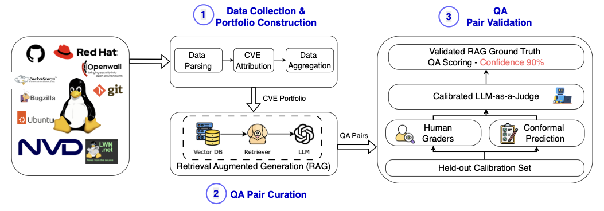
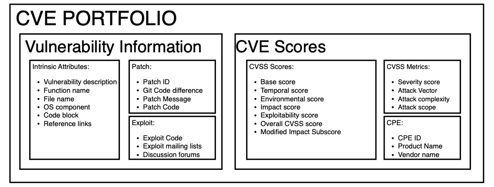
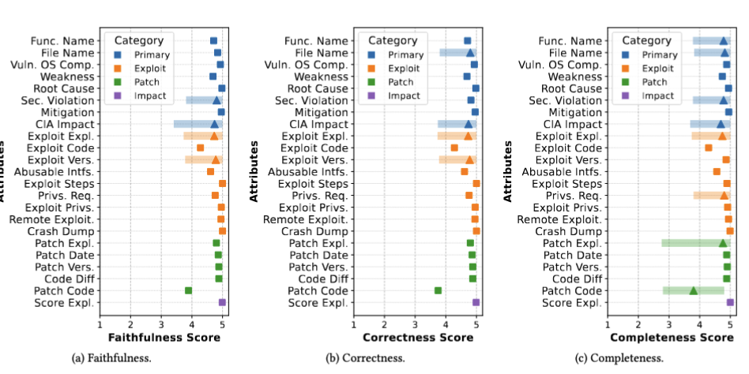
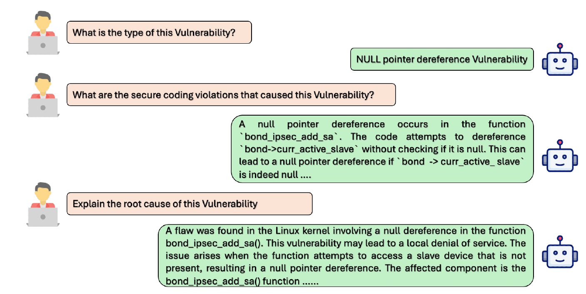
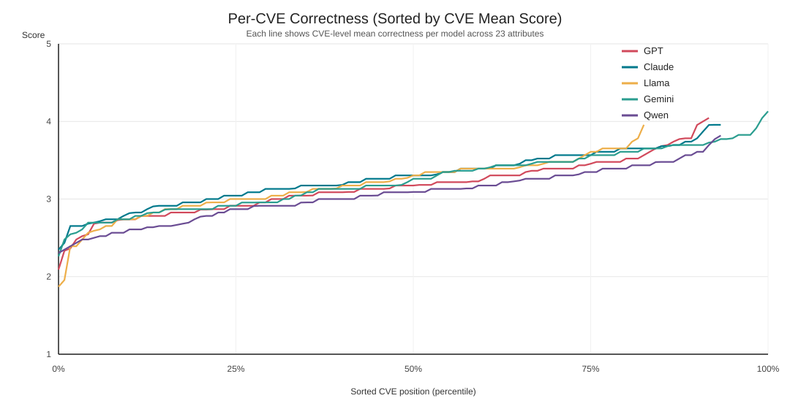
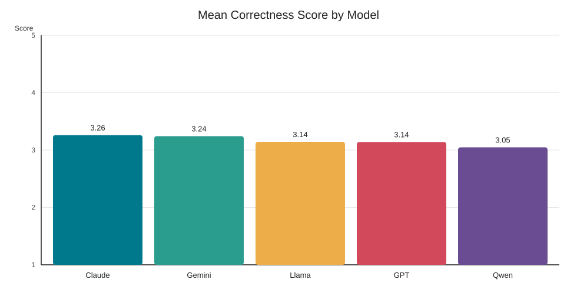
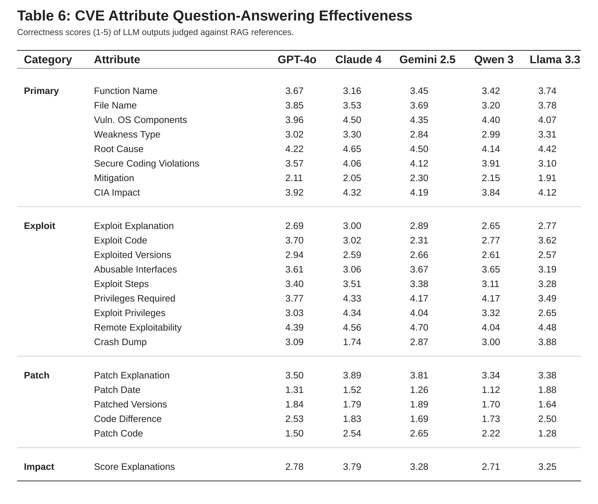

The complete repository can be found at https://anonymous.4open.science/r/OmniVul-34EB
With more than 20,000 Common Vulnerabilities and Exposures (CVEs) reported annually, software vulnerabilities represent a critical cybersecurity challenge. This volume has intensified the demand for automated detection and analysis, motivating the integration of large language models (LLMs) for such tasks. However, existing vulnerability benchmarks are not suitable for LLMs, as most of them 1) rely on narrow data sources, 2) lack deep context, and 3) focus on single-turn Q&A rather than realistic, multi-turn analyst workflows. To address this gap, we introduce OmniVul, a comprehensive multi-turn benchmark for LLM-based vulnerability assessment. OmniVul comprises 2,000 CVEs with question-answer pairs spanning 23 attributes, including detection, code localization, root cause analysis, and patch suggestion. We employ an automated workflow to aggregate multi-source data via retrieval-augmented generation (RAG), ensuring quality through LLM-as-a-Judge filtering and conformal prediction calibrated by human expert annotations. An evaluation of five state-of-the-art LLMs on OmniVul reveals distinct performance gaps, with top-1 accuracy remaining below 60% for vulnerable code detection and CVE identification. Our evaluation also demonstrates that current models lack critical reasoning capabilities for reliable vulnerability assessment. These results highlight the importance of OmniVul for advancing research in evaluating and fine-tuning LLMs for vulnerability assessment.
2,000 CVEs collected and curated for benchmark construction.
23 vulnerability attributes for richer analysis than single-turn QA.
Section_3 (Data curation and validation pipeline), Section_4 (OmniVul Dataset), Section_5 (SOTA LLM Evaluation).
Vulnerability detection, CVE identification, and attribute QA correctness.
This diagram captures the end-to-end OmniVul workflow, from multi-source CVE collection through portfolio construction, QA generation, and evaluation.

Section 3 details the end-to-end curation and validation workflow that transforms raw CVE sources into grounded portfolios, multi-turn QA, and quality-calibrated outputs.
Section_3/step_1).Section_3/step_2).Section_3/step_3).Portfolio construction begins with NVD CVEs and enriches entries across seclists, packetstorm, exploitDB, Ubuntu, redhat-cve-details, and git-kernel commit history, including commit messages for code-level grounding.
Conformal validation computes nonconformity scores and calibrated thresholds for faithfulness, correctness, and completeness to support confidence-aware QA quality checks.
Execution requires dependencies from requirements.txt. Model-backed stages require API key configuration in constants.py.
Data sources used in Section_3 and the associated category/attribute coverage are summarized below.
| Source | # Download | # CVEs | Category | Attribute |
|---|---|---|---|---|
| NVD | 14170 | 9379 | All Linux CVEs | Description, References |
| GitHub | 1300 | 987 | Reference links | Git diff msgs |
| git.kernel.org | 24233 | 6325 | Commit msgs | Commit msgs and Patch details |
| Seclists | 2789 | 344 | Entire website | Developer discussions |
| Red-hat | 6967 | 6958 | CVE specific | Impact and Description |
| OpenWall | 573 | 386 | Reference links | Developer discussions |
| Exploit-DB | 3095 | 2183 | All Linux exploits | Exploit code |
| bugzilla.kernel.org | 586 | 544 | Reference links | Vulnerability details |
| bugzilla.redhat.com | 5743 | 5743 | CVE specific | Description |
| Lkml | 154 | 118 | Reference links | Developer discussions |
| Packetstormsecurity | 83 | 63 | Reference links | Exploit description and Code |
| lwn | 324 | 154 | Complete website | Vulnerability description |
| Ubuntu | 8106 | 8106 | CVE specific | CVE metrics and Description |
The portfolio diagram below illustrates the portfolio representation produced from Step 1 and used downstream by the QA-generation and evaluation stages.

A sample CVE portfolio entry is shown directly below.
Sample portfolio entry
Loading sample portfolio...
The complete portfolios and QA pairs are published at: https://figshare.com/s/e7de88e735094f82a668
OmniVul releases 2,000 CVE portfolios with multi-turn QA coverage across 23 attributes, pairing rich vulnerability context with structured analyst-style questioning for downstream evaluation and benchmarking.
OmniVul defines 23 attribute names used for CVE analysis and QA generation:

Conformal-calibrated scores of RAG-generated CVE attributes. Average LLM-judged (a) Faithfulness, (b) Correctness, and (c) Completeness scores for 23 CVE attributes are illustrated as markers, with 90% conformal confidence intervals shown as bars. Square markers (■) indicate perfect agreement (zero non-conformity) with human scores, while triangles (▲) mark attributes with LLM-human deviations. The figure highlights that the RAG-generated attributes not only achieve high evaluation scores, but most also exhibit strong LLM-human score agreement under 90% conformal prediction confidence.
This example illustrates a representative QA chat output produced by the project pipeline.

evaluate_round1.py).evaluate_round2.py).evaluate_round3.py and gather_scores.py).
Section 5 evaluates 200 CVEs with RAG-generated QA pairs in final_sota_qa_pairs.json, with raw portfolios in portfolio_cves.json and 83 patched versions in extracted_patched_cves.json.
Model performance is visualized below for vulnerability detection and CVE identification.


